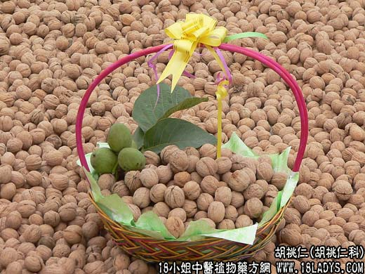

【中药概述】
胡桃仁为胡桃科乔木植物胡鸫的成熟种仁。甘、温。归肺、肾经。
1．强筋壮骨：用于肾阳虚衰的腰痛酸楚，足膝痿弱等，可与补骨脂，益智仁，五味子等配伍，如（<和剂局方>青娥丸：杜仲，补骨脂，胡桃肉，大蒜，青盐）。
2．补益肺肾：用于肺肾虚寒喘咳，或肺虚久咳气喘，能温补肺肾与敛肺纳气平喘，可与补骨脂研末，蜜调如饴服。如（<济生方>人参胡桃汤）。
3．润肠通便：用于血虚津枯的肠燥便秘，单用嚼服，或与火麻仁，肉苁蓉配伍。
【药效鉴别】
胡桃肉虽属补阳药，但临床少用于补肾阳，主要治疗肺肾两虚之证，善于补肺肾、纳气定喘。
【临证应用】
1.主糖尿病，属阴阳俱虚型，尿浊如脂而量多，消瘦明显，头晕耳鸣，腰膝酸软。取胡桃肉12g、分心木15g，浓煎去硬壳，将药汤及果肉，分5份，于饭前半小时服1份，每日5次；
2.主慢性支气管炎，咳喘吐涎痰。取核桃肉60g、补骨脂10g，水煎服。
【化学成分】
含脂肪油、蛋白质、糖类、卵磷质等。
【用量用法】
10——30g，研碎服，或入丸散剂。
【注】
胡桃寄生，寄生于胡桃树上。苦、涩。归肺、肝、肾经。化痰散结，消肿解毒，平喘止咳，抗癌抑癌。治咳嗽、气喘、肝炎、鼻咽癌及多种肿瘤。
【附】
分心木（胡桃荚）：为胡桃科乔木植物胡鸫的隔仁品。用于噎膈、腰痛，遗精、遗尿等症。10～35g，水煎。
【临证应用】
治乳腺癌，属肝郁痰凝型，情志不遂，胸闷胁胀，乳房部肿块皮色不变。取核桃隔 土贝母 银花 连翘各9g，上药水酒各半煎服，适量。